"""
A photograph of an elephant facing the camera.
The elephant has large tusks and ears and is standing in a flat savannah.
Is is bright day light with a cloudy sky.
"""6 - Visual Representations
TipLearning Objectives
After this lecture you should be able to:
- Define a representation and explain why learning compact embeddings from raw pixels enables efficient downstream task performance.
- Distinguish between supervised, weakly supervised, and self-supervised learning paradigms and describe the kind of representation each produces.
- Explain the invariance–selectivity trade-off and select appropriate invariances for a given task.
- Distinguish between global and local representations and identify when each is appropriate.
- Select and apply the right adaptation strategy — k-NN, linear probe, LoRA, partial fine-tuning, or full fine-tuning — for a given dataset size and task.
TipTLDR Recap
Core idea: A representation \(\mathbf{z} = f(\mathbf{x})\) maps raw pixels to a compact embedding where distances reflect semantic similarity rather than pixel-level appearance.
Three learning paradigms — same architecture, different objective:
- Supervised (ResNet, ViT on ImageNet): label-aligned features, good for classification
- Weakly supervised (CLIP): image–text pairs, enables zero-shot classification
- Self-supervised (MAE, SimCLR, DINO): no labels, learns structure from raw data
Global vs local: The [CLS] token captures image-level semantics; patch tokens preserve spatial structure. Use global embeddings for retrieval and classification, local tokens for segmentation and detection.
Adaptation hierarchy (simplest first):
- k-NN — no training, instant quality check
- Linear probe — frozen encoder, train a linear head
- LoRA / Adapters — parameter-efficient fine-tuning
- Partial fine-tune — unfreeze top layers
- Full fine-tune — last resort for large datasets
For product image retrieval, DINOv2/v3 embeddings typically outperform supervised ResNet features and CLIP embeddings — the pure vision objective preserves fine-grained visual distinctions without the coarsening effect of language alignment.
1 Motivation
One of the central challenges in computer vision is the semantic gap: raw pixels are a limited representation of what an image actually depicts. Humans, by contrast, infer rich semantic information from images almost effortlessly and thus can describe the essence of what an image shows with ease. A good example is Figure 1:
It is easy for humans to describe the image. For example:
That description is far smaller, in terms of bits required, than the raw image, yet preserves practically relevant information.
NoteInformation Content: Raw vs Natural Language
Let’s quantify the dramatic compression achieved by semantic description:
Raw Image (Pixel Representation):
- Resolution: 640 × 360 pixels
- Channels: 3 (RGB)
- Bits per pixel: 8 bits per channel
| Representation | Size (bits) | Size (KB) | Compression Factor |
|---|---|---|---|
| Raw RGB Image | 5,529,600 | 675.0 | 1× |
| Natural Language (UTF-8) | 1,312 | 0.16 | 4215× |
| Natural Language (ASCII) | 1,148 | 0.14 | 4817× |
We can also say: By describing the image we represent the image with natural language, instead of the raw pixels. This is exactly what Representation Learning is interested in: How can we find compact representations (also embeddings) wich are significantly smaller than the raw, original representations while retaining relevant information?
One motivation is the dramatic mismatch between the set of all possible images and the set of natural images. As illustrated in Figure 2, natural images occupy only a tiny fraction of the full pixel space. For instance, for RGB images of size \(256 \times 256\) pixels with 255 possible intensity values per channel, the total number of possible images is \(255^{256 \times 256 \times 3}\), an astronomically large number, effectively infinite from a practical standpoint. A well-chosen embedding space exploits this structure, placing semantically similar images close together regardless of lighting, pose, or viewpoint.
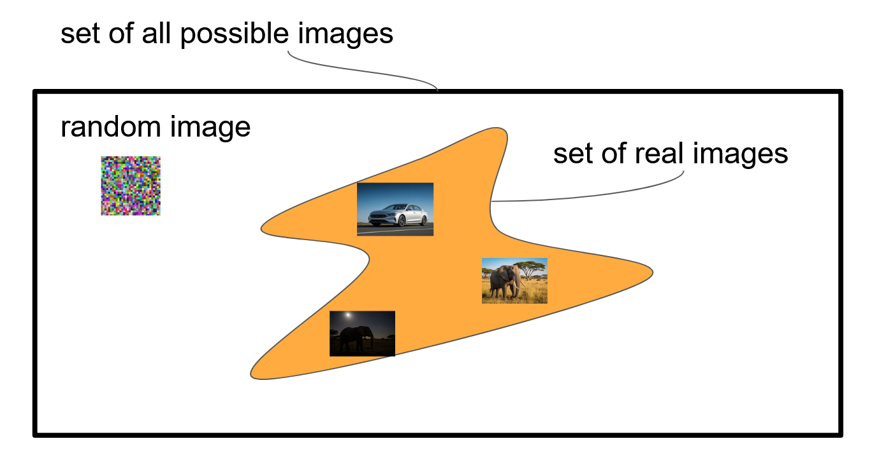
2 What Is a Representation?
A representation is the output \(\mathbf{z} = f(\mathbf{x})\) of an encoder \(f\) applied to input \(\mathbf{x}\). The encoder \(f\) is the mapping; \(\mathbf{z} \in \mathbb{R}^d\) is its result. The goal is a semantic coordinate system in which distances \(\|\mathbf{z}_i - \mathbf{z}_j\|_2\) reflect task-relevant relationships.
Therefore, when we refer to representations we typically mean vector-valued (distributed) representations and not, for example, natural language descriptions. Let’s take a look at the (synthetic) images in Figure 3:
Imagine you have to represent those in 2-D: \(\mathbf{z} \in \mathbb{R}^2\). How would you proceed from a human point of view?
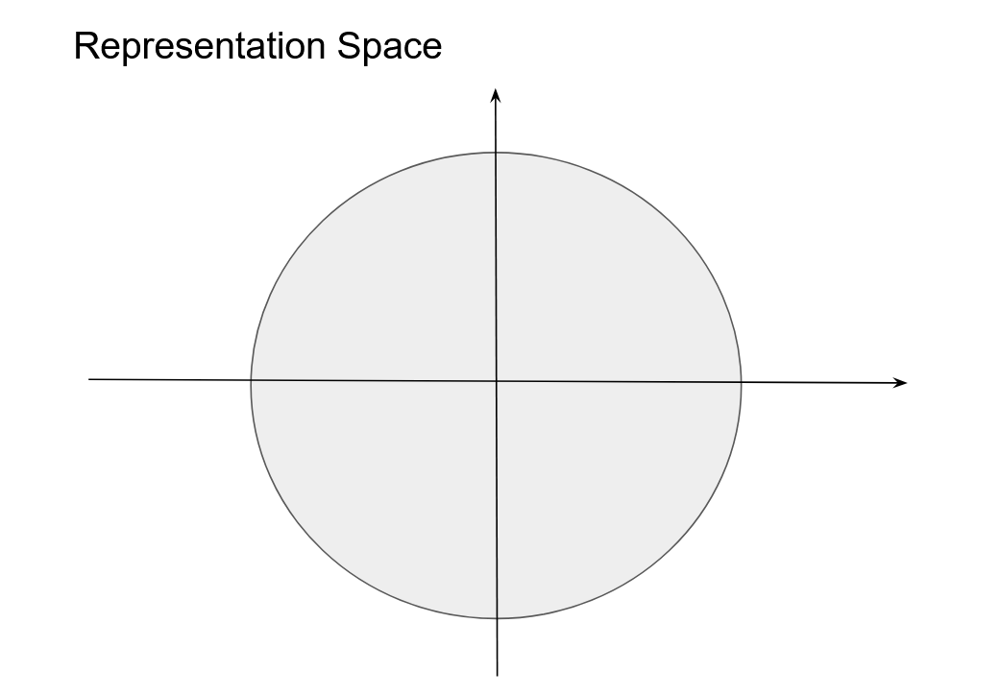
NoteQuestion: Representing Images
How would you represent the images of Figure 3 in 2 dimensions? Why?
Hint: Similar images should be close to each other. Exact positions do not matter, only distances. How similarity is defined? Up to you!
Click for result
Key Considerations:
The images demonstrate different types of similarity challenges in representation learning:
Same class, same conditions (Elephant Day 1 & Elephant Day 2): These are most similar - both elephants photographed in daylight. They exhibit intra-class variation while maintaining the same semantic category.
Same class, different conditions (Elephant Day vs. Elephant Night): Moderate similarity - same animal class but dramatically different lighting conditions. This tests illumination invariance.
Different classes, same conditions (Elephants, Giraffe, Rhino by day): Animals share similar contexts (daytime, natural habitat) but different semantics, requiring inter-class discrimination.
Different domain (Animals vs. Car): Least similar - represents a complete domain shift from wildlife to manufactured objects.
Ideal representation learning: A good model should group the two daytime elephants closely, maintain reasonable similarity between day/night elephants, distinguish between different animal classes, and clearly separate animals from vehicles.
2.1 Invariance and Selectivity
Good representations represent a semantic coordinate system where distances \(\|\mathbf{z}_i - \mathbf{z}_j\|_2\) reflect meaningful relationships.
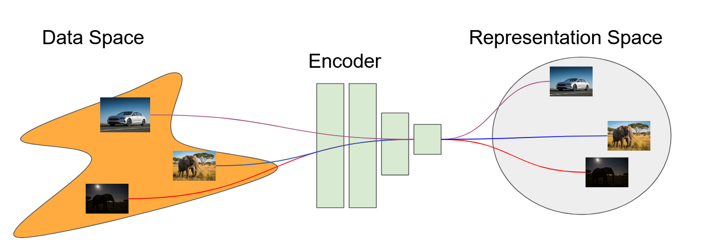
Good representations balance two competing objectives:
- Invariance: \(\|f(\mathbf{x}) - f(g(\mathbf{x}))\|_2 < \epsilon\) for nuisance transforms \(g\) such as lighting changes, horizontal flips, or small crops. The representation should not change when irrelevant properties of the image change.
- Selectivity: \(\|f(\mathbf{x}_i) - f(\mathbf{x}_j)\|_2 > \delta\) for semantically distinct inputs. The representation must distinguish images that differ in ways that matter.
The critical point is that “nuisance” is task-dependent. For product retrieval, color is discriminative: a color-invariant embedding would make a red shoe and a white shoe indistinguishable. For medical imaging, orientation is often meaningful: a rotation-invariant embedding could destroy diagnostic information. A good representation discards only what the downstream task truly does not need.
Crucially, the goal of representation learning differs from classification: rather than predicting a fixed label, the aim is to learn a reusable embedding that transfers to many tasks without retraining the encoder.
NoteDesireable Properties of Representations
Here is an overview of desirable properties:
Invariance & Selectivity Balance
- Invariance: \(\|f(\mathbf{x}) - f(g(\mathbf{x}))\|_2 < \epsilon\) for nuisance transform \(g\) (lighting, pose)
- Selectivity: \(\|f(\mathbf{x}_i) - f(\mathbf{x}_j)\|_2 > \delta\) for semantically different \(\mathbf{x}_i, \mathbf{x}_j\)
- Trade-off: Too much invariance → loss of discriminative details
- Sweet spot: Preserve task-relevant variations, discard irrelevant ones
Geometric Structure Preservation
- Smooth manifold: Similar semantic concepts cluster in representation space
- Composability: \(f(\mathbf{x}_1) \oplus f(\mathbf{x}_2) \approx f(\text{combine}(\mathbf{x}_1, \mathbf{x}_2))\) for vector operations
- Interpolability: Linear interpolation \(\alpha f(\mathbf{x}_1) + (1-\alpha) f(\mathbf{x}_2)\) yields meaningful intermediate concepts
Transfer Efficiency
- Low sample complexity: Few examples needed for downstream adaptation
- Broad applicability: Same \(f(\cdot)\) works across multiple tasks/domains
- Graceful degradation: Performance degrades slowly with domain shift
2.1.1 Computational Practicality
- Compact dimensionality: \(\text{dim}(\mathbf{z}) \ll \text{dim}(\mathbf{x})\) while preserving information
- Fast computation: Forward pass \(f(\mathbf{x})\) efficient for real-time applications
- Stable training: Representation learning converges reliably
3 Learning Paradigms
The same neural architecture can produce very different representations depending on what it is trained to do. Three paradigms dominate modern visual representation learning.
3.1 Supervised Learning
Supervised pretraining learns \(f(\cdot)\) by predicting human-assigned labels (e.g., 1000 ImageNet classes) with a cross-entropy loss. Deep networks progressively transform pixels into higher-level semantics, and the penultimate layer embedding often separates classes cleanly in embedding space.
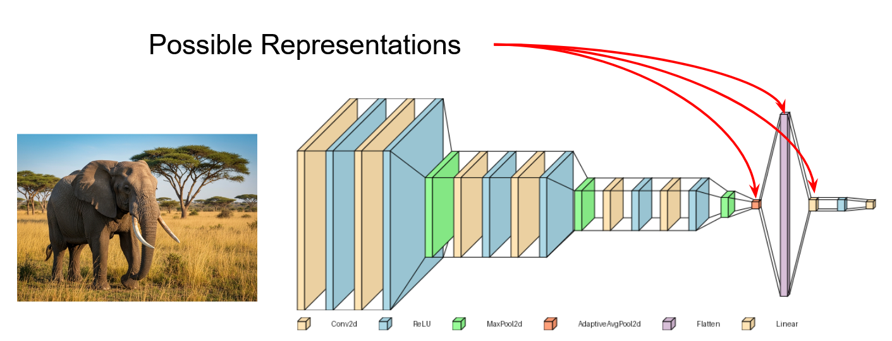
3.2 Weakly Supervised: CLIP
Weak supervision uses noisy or partial labels at scale, such as image–caption pairs scraped from the web. CLIP (Radford et al. (2021)) trains an image encoder and a text encoder jointly to align matching pairs using contrastive learning, illustrated in Figure 7. At inference, text prompts (“a photo of a cat”) serve as classifiers, enabling zero-shot recognition without any labeled images for the target task.
Note(Optional) CLIP Loss
Composite objective. CLIP jointly trains an image encoder \(f_\theta\) and a text encoder \(g_\phi\) to align matched image–text pairs using a symmetric contrastive (InfoNCE) loss with a learned temperature.
Setup. For a batch of \(N\) paired samples \(\{(x_i, y_i)\}_{i=1}^N\):
- Image features: \(\tilde{\mathbf{v}}_i = \frac{f_\theta(x_i)}{\|f_\theta(x_i)\|}\)
- Text features: \(\tilde{\mathbf{t}}_i = \frac{g_\phi(y_i)}{\|g_\phi(y_i)\|}\)
- Learned logit scale: \(\alpha = \exp(s)\) with parameter \(s\) (equivalently temperature \(\tau = 1/\alpha\))
- Similarities (cosine scaled): \(s_{ij} = \alpha \, \tilde{\mathbf{v}}_i^\top \tilde{\mathbf{t}}_j\)
Image-to-text loss (with in-batch negatives). \[\begin{equation} \mathcal{L}_{i \to t} = \frac{1}{N} \sum_{i=1}^{N} -\log \frac{\exp\!\big(s_{ii}\big)} {\sum_{j=1}^{N} \exp\!\big(s_{ij}\big)} \, . \end{equation}\]
Text-to-image loss (symmetric direction). \[\begin{equation} \mathcal{L}_{t \to i} = \frac{1}{N} \sum_{j=1}^{N} -\log \frac{\exp\!\big(s_{jj}\big)} {\sum_{i=1}^{N} \exp\!\big(s_{ij}\big)} \, . \end{equation}\]
Total objective. \[\begin{equation} \mathcal{L}_{\text{CLIP}} = \tfrac{1}{2} \left( \mathcal{L}_{i \to t} + \mathcal{L}_{t \to i} \right) \, . \end{equation}\]
Inference note: zero-shot classification uses text prompts \(y_c =\) “a photo of a \(\{class\}\)” to form class prototypes \(\tilde{\mathbf{t}}_c\) and picks \(\arg\max_c \tilde{\mathbf{v}}^\top \tilde{\mathbf{t}}_c\).
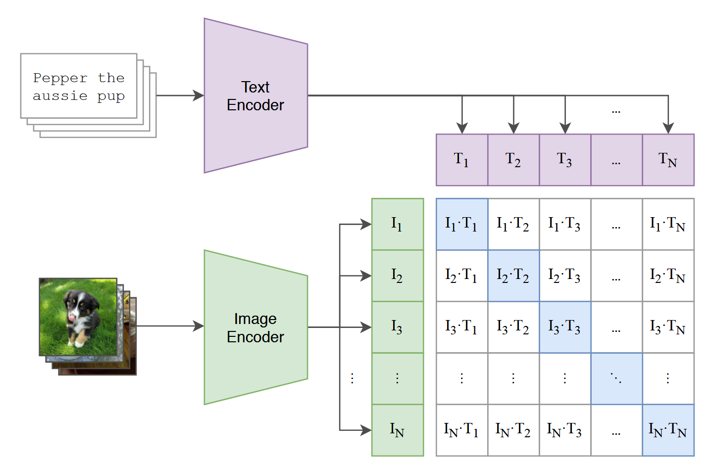
3.3 Self-Supervised Learning
Self-supervised learning (SSL) derives training signal from the data itself: no human labels needed. The encoder learns by solving pretext tasks such as reconstructing masked patches or matching different augmented views of the same image.
3.3.1 Masked Autoencoding (MAE)
Masked Autoencoding (MAE) (He et al. (2021)) masks a large fraction of image patches (~75%) and trains the encoder to reconstruct them. To fill in missing patches, the model must develop a global understanding of image structure. Post-training, the decoder is discarded; the encoder alone extracts features.
Note(Optional) Masked Autoencoding Loss
Setup. Given an image \(x\), MAE patchifies it and masks a large subset of patches \(\mathcal{M}\) (typically \(\sim 75\%\)), keeping visible patches \(\mathcal{V}\).
- Patchify: \(X = \mathrm{Patchify}(x) \in \mathbb{R}^{P \times d}\) with \(P\) patches and patch-dimension \(d\).
- Split: \(X = \{X_{\mathcal{V}}, X_{\mathcal{M}}\}\).
- Encoder \(E_\theta\) processes only visible tokens \(X_{\mathcal{V}}\) to produce latents \(H = E_\theta(X_{\mathcal{V}})\).
- Decoder \(D_\phi\) receives \(H\) plus learned mask tokens at masked positions and predicts \(\hat{X}_{\mathcal{M}} = D_\phi(H, \text{mask tokens})\).
Reconstruction loss (masked patches only). \[\begin{equation} \mathcal{L}_{\text{MAE}} = \frac{1}{|\mathcal{M}|} \sum_{p \in \mathcal{M}} \left\| \hat{X}_{p} - \tilde{X}_{p} \right\|_2^2 , \end{equation}\] where \(\tilde{X}\) are normalized pixel targets (per-channel mean/variance normalization) in patch space. The high mask ratio combined with an asymmetric encoder/decoder yields efficient pretraining and strong transfer.
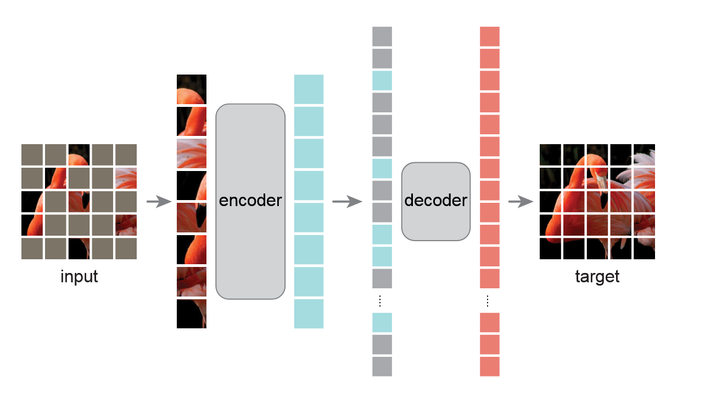
3.3.2 Contrastive Learning (SimCLR)
Contrastive learning trains the model such that different augmented views of the same image are nearby in embedding space, while embeddings from different images are pushed apart. SimCLR (Chen et al. (2020)) demonstrated that this can be achieved with an InfoNCE loss over large batches, as illustrated in Figure 9.
Note(Optional) InfoNCE Loss
Core Idea: InfoNCE maximizes mutual information between positive pairs while contrasting against negative samples.
Mathematical Form: \[ \mathcal{L}_{\text{InfoNCE}} = -\mathbb{E}\left[\log \frac{\exp(\text{sim}(z_i, z_i^+)/\tau)}{\exp(\text{sim}(z_i, z_i^+)/\tau) + \sum_{j=1}^{N-1} \exp(\text{sim}(z_i, z_j^-)/\tau)}\right] \]
Components:
- \(z_i\): Anchor embedding (encoded from image \(x_i\))
- \(z_i^+\): Positive embedding (different augmentation of same image)
- \(z_j^-\): Negative embeddings (from different images in batch)
- \(\text{sim}(\cdot, \cdot)\): Cosine similarity
- \(\tau\): Temperature parameter; typical values \(\tau \in [0.07, 0.5]\)
Large batch sizes (256–4096) are required to provide sufficient negatives.
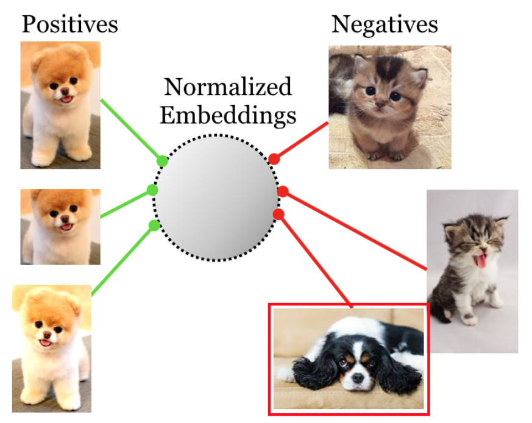
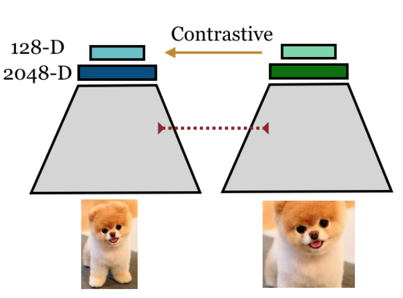
3.3.3 Self-Distillation (DINO Example)
Self-distillation removes the need for explicit negative pairs. A student network is trained to match the output distribution of a teacher network, where the teacher is an exponential moving average (EMA) of the student weights. The DINO series — DINO (Caron et al. (2021)), DINOv2 (Oquab et al. (2024)), and DINOv3 (Siméoni et al. (2025)) — demonstrates that this principle produces both strong global descriptors (the [CLS] token) and high-quality local patch tokens.
Figure 10: (Optional) DINOv3 Loss Components
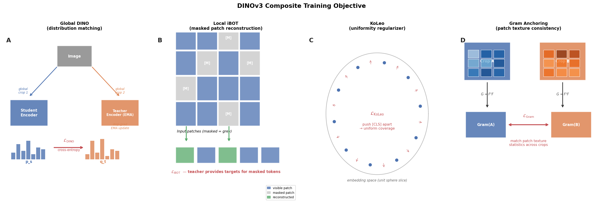
The four components of the DINOv3 composite objective. A — Global DINO: student and teacher encoders process different global crops; cross-entropy aligns the student’s distribution to the teacher’s (stop-grad EMA). B — Local iBOT: masked patch tokens are reconstructed using teacher targets. C — KoLeo: repulsion between nearest-neighbour [CLS] embeddings promotes uniform coverage of the embedding space. D — Gram anchoring: Gram matrices of patch features are matched across crops to enforce texture consistency.
Note(Optional) DINOv3 Loss
Composite objective. DINOv3 trains a student ViT against an EMA teacher with multi-crop views, combining a global DINO loss, a local iBOT loss, a KoLeo uniformity regularizer, and (in a refinement stage) a Gram anchoring loss on patch similarities:
\[\begin{align} \mathcal{L} &= \underbrace{\mathcal{L}_{\text{DINO}}}_{\text{global crops}} + \lambda_{\text{iBOT}} \underbrace{\mathcal{L}_{\text{iBOT}}}_{\text{masked local tokens}} + \lambda_{\text{KoLeo}} \underbrace{\mathcal{L}_{\text{KoLeo}}}_{\text{uniformity on }[\text{CLS}]} + \lambda_{\text{Gram}} \underbrace{\mathcal{L}_{\text{Gram}}}_{\text{refinement}}. \end{align}\]
Global DINO (distribution matching, no negatives). Student probabilities \(p_s=\mathrm{softmax}(g_s(z_s)/\tau_s)\); teacher targets \(q_t=\mathrm{stopgrad}\!\left[\mathrm{softmax}\!\left((g_t(z_t)-c)/\tau_t\right)\right]\) with centering \(c\) and temperatures \(\tau_s,\tau_t\). \[\begin{equation} \mathcal{L}_{\text{DINO}} \;=\; - \sum_{k} q_t^{(k)} \log p_s^{(k)} \quad \text{(summed over pairs of student/teacher crops).} \end{equation}\]
Local iBOT (masked token prediction). \[\begin{equation} \mathcal{L}_{\text{iBOT}} \;=\; - \frac{1}{|\mathcal{M}|}\sum_{m \in \mathcal{M}}\sum_{k} q_{t,m}^{(k)} \log p_{s,m}^{(k)} . \end{equation}\]
KoLeo (feature uniformity). \[\begin{equation} \mathcal{L}_{\text{KoLeo}} \;\approx\; -\frac{1}{N}\sum_{i=1}^{N} \log d_i \quad \text{with } d_i \text{ the nearest-neighbour distance of } z^{[\text{CLS}]}_i . \end{equation}\]
Gram anchoring (refinement step). With \(\ell_2\)-normalized patch features \(\tilde{Z}_s, \tilde{Z}_g \in \mathbb{R}^{P \times D}\) and Gram matrices \(G(\tilde{Z})=\tilde{Z}\tilde{Z}^\top\): \[\begin{equation} \mathcal{L}_{\text{Gram}} \;=\; \big\| G(\tilde{Z}_s) - G(\tilde{Z}_g) \big\|_F^2 . \end{equation}\]
Teacher is an EMA of the student; teachers view only global crops; iBOT masks a subset of student patches. Gram anchoring is applied in a late refinement phase to restore patch-level consistency.
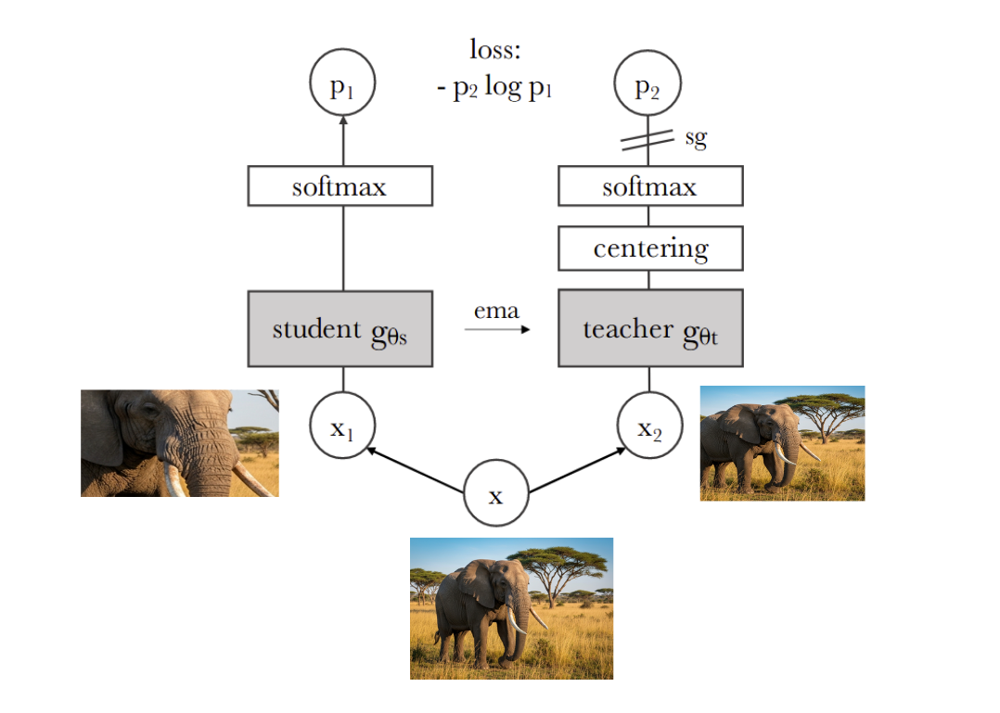
NoteDINOv3 Overview Video
Watch Meta’s introduction to DINOv3, explaining the key improvements over DINOv2 and the self-distillation approach:
4 Global vs Local Representations
Global representations summarize an entire image into a single embedding — typically the [CLS] token from a ViT or the output of global average pooling. They capture image-level semantics and are the natural choice for classification and retrieval.
Local representations are spatially-resolved patch tokens. Each token describes a region of the image and preserves positional information. They are essential for tasks that require understanding where something is: segmentation, detection, and dense prediction.
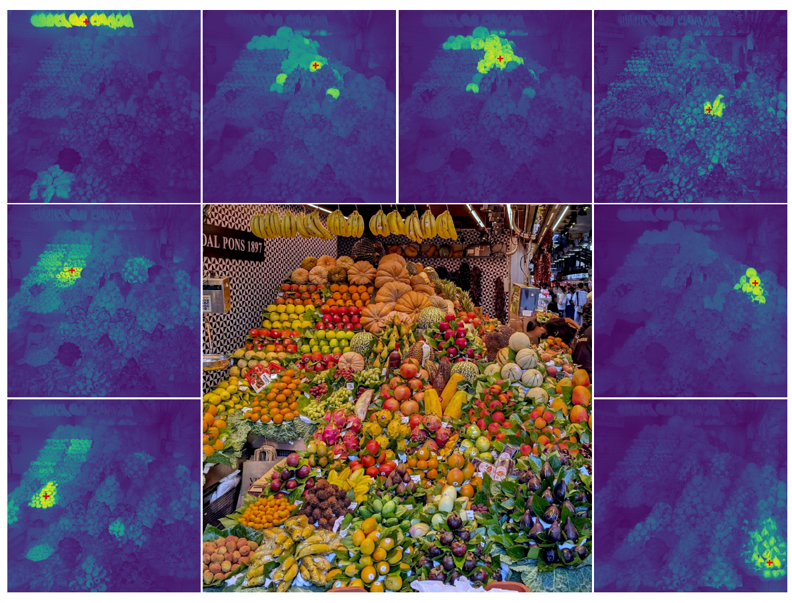
🤔 Think About It
What kind of embedding, global or local, would you use to find similar products in a web-shop? For example, to display shoes that are similar to the pair a customer is looking at.
Key considerations
For product retrieval, a global embedding per image is sufficient: the query is “find me something that looks like this shoe overall,” not “find the pixel with the heel.” A single [CLS] token enables fast approximate nearest-neighbour search over a catalogue of millions.
For tasks requiring spatial understanding — detecting manufacturing defects on a product surface, or identifying a specific region of damage — local patch tokens carry the necessary positional detail. Many modern architectures (DINOv2/v3, ViTs) provide both: use the [CLS] token for global retrieval, patch tokens for dense tasks.
5 Comparing Representations
The following illustrates how different representation paradigms handle the same set of images (Figure 13).
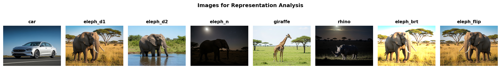
Cosine similarities between normalized representations are shown in Figure 15, Figure 16, and Figure 17, and compared to pixel-space similarity in Figure 14.
NoteMetrics Definitions
Similarity Metrics:
For images represented as vectors \(\mathbf{z}_i, \mathbf{z}_j \in \mathbb{R}^d\):
Euclidean Distance (Pixel Space): \[d_{\text{L2}}(\mathbf{z}_i, \mathbf{z}_j) = \|\mathbf{z}_i - \mathbf{z}_j\|_2 = \sqrt{\sum_{k=1}^d (z_i^{(k)} - z_j^{(k)})^2}\]
Cosine Similarity: \[\text{sim}_{\cos}(\mathbf{z}_i, \mathbf{z}_j) = \frac{\mathbf{z}_i^\top \mathbf{z}_j}{\|\mathbf{z}_i\|_2 \|\mathbf{z}_j\|_2} = \frac{\sum_{k=1}^d z_i^{(k)} z_j^{(k)}}{\sqrt{\sum_{k=1}^d (z_i^{(k)})^2} \sqrt{\sum_{k=1}^d (z_j^{(k)})^2}}\]
where \(\text{sim}_{\cos} \in [-1, 1]\) with 1 indicating perfect alignment, 0 indicating orthogonality, and -1 indicating opposite directions.
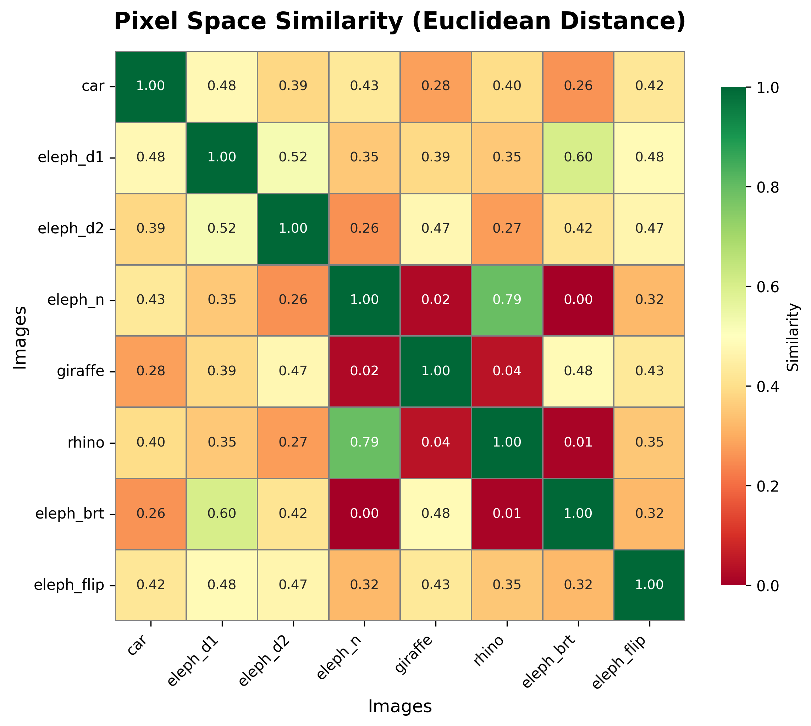
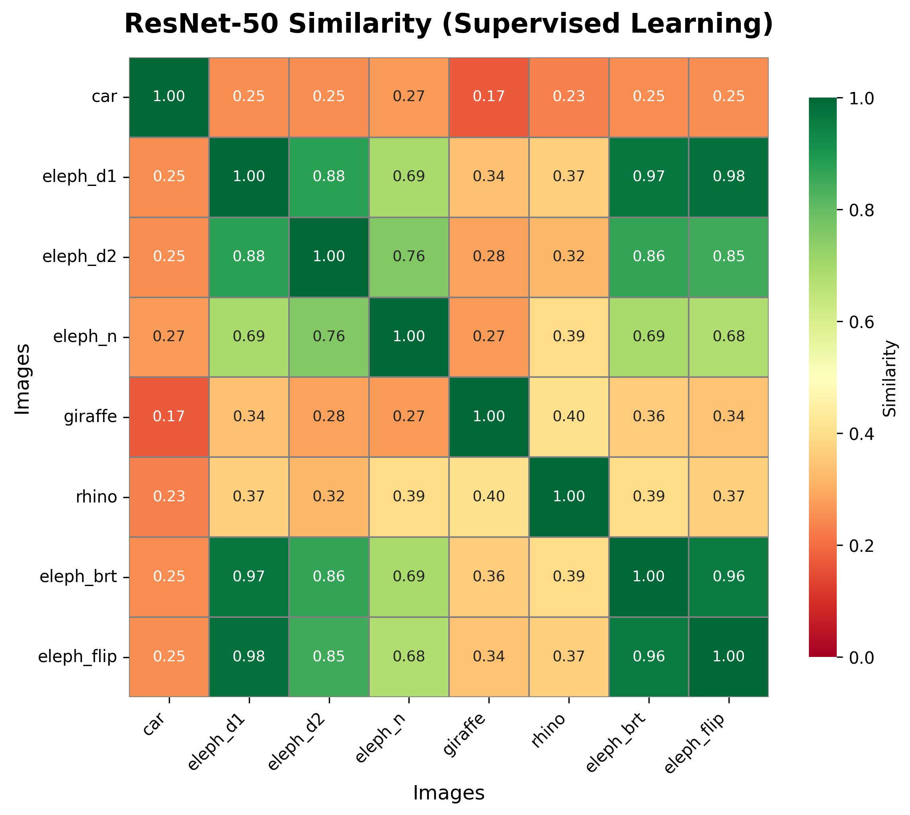
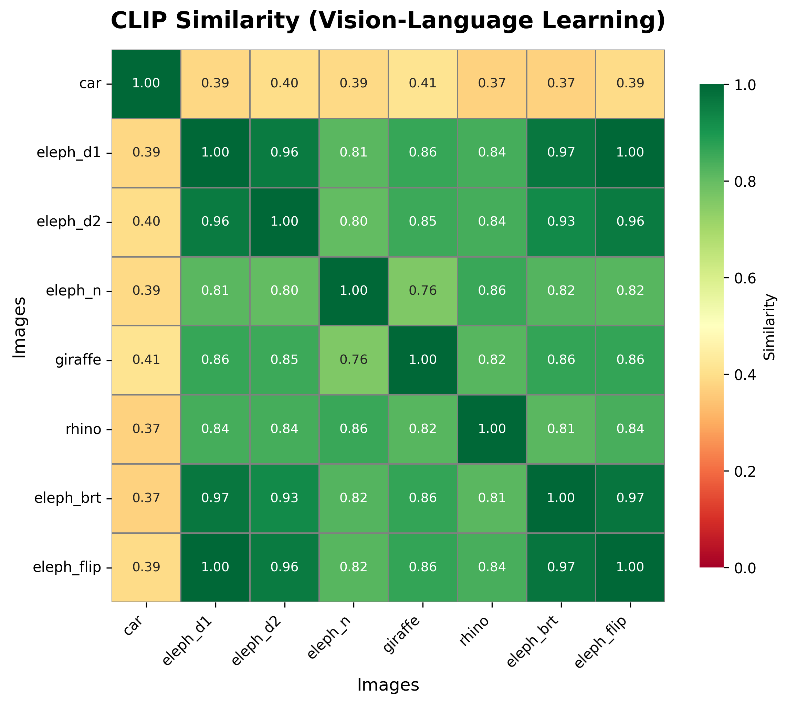
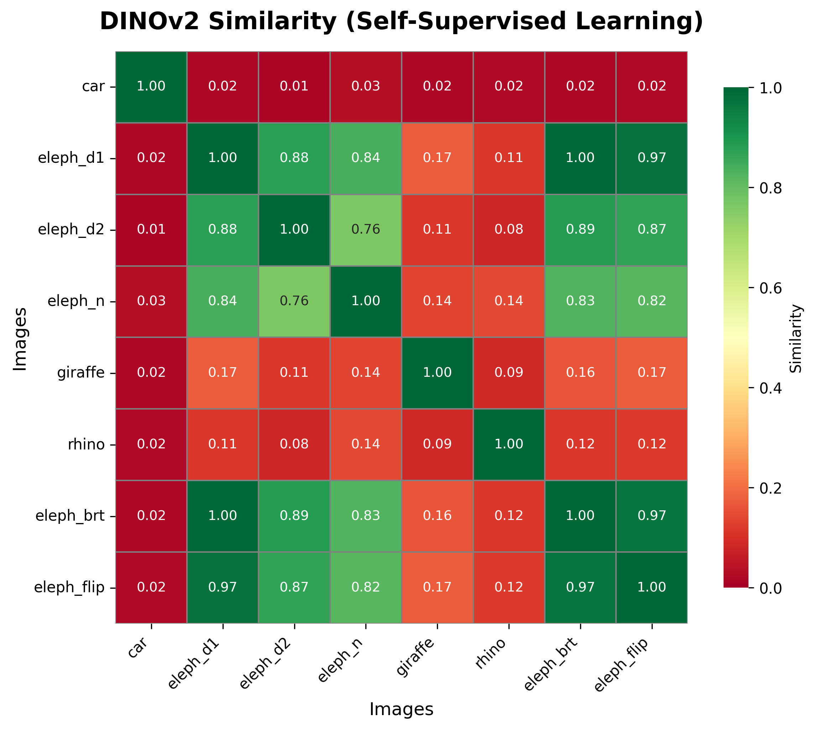
NoteQuestion: Which Representations Do You Favour? And Why?
Looking at the similarity matrices, which representation do you prefer and why?
Click for Discussion
Pixel Space (Figure 14):
- Not suitable for any semantic task
- Captures low-level appearance variations (lighting, pose, exact pixel alignment)
- Cannot distinguish semantic categories from superficial similarities
ResNet-50 Supervised (Figure 15):
- Much better than pixel space but still limited
- Shows semantic grouping (elephants cluster)
- Trained on ImageNet classes, may not transfer optimally to fine-grained tasks
- Some sensitivity to lightning (elephant night vs day)
CLIP Multimodal (Figure 16):
- Good semantic structure aligned with natural language concepts
- Clear separation between major categories (animals vs. vehicles)
- Limitation: Lower differentiation within categories
- Best for: Broad semantic retrieval and zero-shot open-vocabulary tasks
- Trade-off: Language alignment may sacrifice fine-grained visual distinctions
DINOv2 Self-Supervised (Figure 17):
- Sharp discrimination between semantic classes (Elephant vs Giraffe)
- Strong within-category structure (elephant day variants)
- Clear night/day distinctions while preserving identity
- Best for: Few-shot learning, fine-grained classification, dense prediction tasks
- Pure vision objective without language bias preserves visual details
Recommendation hierarchy:
- DINOv2/v3: Default choice for vision-centric tasks requiring discriminative power
- CLIP: When zero-shot capabilities or text-image alignment is critical
- Supervised CNN: When computation is limited and broad categories suffice
- Pixel space: Never for semantic tasks (only for exact duplicate detection)
WarningTask-Relevant Invariance
Critical consideration: Invariance to task-relevant attributes can render representations useless.
- Color-invariant features for flower classification: Distinguishing red from yellow tulips becomes impossible.
- Rotation-invariant features for medical imaging: Anatomical orientation is often clinically meaningful.
- Scale-invariant features for size estimation: Object measurement tasks require preserving size cues.
Design principle: Match your representation’s invariances to your task requirements. Preserve information and let the downstream model learn to ignore irrelevant variations.
6 Adapting Pretrained Models
Pretrained embeddings are most useful when they can be adapted to a specific downstream task without training from scratch. The right strategy depends on dataset size, domain similarity, and compute budget — ranging from a simple k-NN lookup (no training) through linear probing and parameter-efficient fine-tuning to full fine-tuning as a last resort. The next lecture covers each strategy in detail with code examples and a decision framework for choosing between them.
7 Quiz
NoteQuestion 1: Understanding Representation Learning
Question: Why do representations learned from raw pixels (pixel-space similarity) fail to capture semantic relationships between images?
Click for Answer
Answer: Pixel-space representations measure low-level appearance differences (exact color values, lighting conditions, spatial alignment) rather than high-level semantic content. Two images of the same object under different lighting or poses will have large pixel-level distances despite being semantically identical. For example, in Figure 14, pixel distances cannot distinguish between “different elephants in similar lighting” vs “same elephant in different lighting”: both create similar pixel-level differences. Good representations compress the enormous space of possible images (\(255^{H \times W \times C}\) combinations) into a semantic coordinate system where distances reflect meaning.
NoteQuestion 2: Invariance and Selectivity Trade-off
Question: Explain the invariance-selectivity trade-off in representation learning. Provide one concrete example where too much invariance would harm performance on a specific task.
Click for Answer
Answer:
The Trade-off: Good representations must balance two competing goals:
- Invariance: \(\|f(\mathbf{x}) - f(g(\mathbf{x}))\|_2 < \epsilon\) for nuisance transforms \(g\) (lighting, pose changes)
- Selectivity: \(\|f(\mathbf{x}_i) - f(\mathbf{x}_j)\|_2 > \delta\) for semantically different inputs
Concrete Example - Flower Classification: If representations are completely color-invariant (treating all colors as identical), distinguishing between red roses and yellow roses becomes impossible, even though color is the primary discriminative feature. The model would collapse all flower images to similar embeddings regardless of color, destroying task-critical information.
Other Examples:
- Medical imaging: Rotation invariance destroys anatomical orientation information needed for diagnosis
- Object size estimation: Scale invariance removes absolute/relative size cues
- Material classification: Texture invariance prevents distinguishing wood from metal
Design Principle: Match invariances to task requirements — preserve information the downstream task needs, discard only true nuisance factors.
NoteQuestion 3: Comparing SSL Objectives
Question: What is the key advantage of self-distillation methods (DINO/DINOv2/DINOv3) over contrastive learning methods (SimCLR)?
Click for Answer
Answer:
Key Advantage: Self-distillation does not require explicit negative samples or large batch sizes.
Contrastive Learning (SimCLR):
- Requires large batches (256-4096) to provide sufficient negative pairs
- InfoNCE loss: \(\mathcal{L} = -\log \frac{\exp(\text{sim}(z_i, z_i^+)/\tau)}{\exp(\text{sim}(z_i, z_i^+)/\tau) + \sum_{j=1}^{N-1} \exp(\text{sim}(z_i, z_j^-)/\tau)}\)
- Computational cost and memory scale with batch size
- Needs careful negative mining strategies
Self-Distillation (DINO):
- Student network matches teacher’s probability distribution over crops
- Teacher is EMA of student weights (no separate training)
- Emergent clustering arises from teacher-student dynamics and centering/sharpening
- Works with smaller batches, more memory-efficient
- Bonus: Produces both strong global descriptors AND high-quality local (patch) tokens
Result: DINO-family models achieve state-of-the-art transfer performance with simpler training dynamics and lower computational requirements.
NoteQuestion 4: Global vs Local Representations
Question: When should you use global representations versus local representations? Give one specific task example for each.
Click for Answer
Answer:
Global Representations (single embedding per image, e.g., [CLS] token):
- Use when: Task requires image-level understanding without spatial localization
- Examples:
- Image classification: “Is this a cat or dog?” — only need overall category
- Image retrieval: “Find similar vacation photos” — semantic similarity at image level
- Zero-shot classification (CLIP): “Does this image contain a beach?” — image-text alignment
Local Representations (spatially-resolved patch tokens, e.g., DINOv3 patch features):
- Use when: Task requires pixel-level or region-level understanding
- Examples:
- Semantic segmentation: “Label every pixel as road/car/pedestrian” — need spatial structure
- Object detection: “Find all bounding boxes containing cars” — need localization
- Dense prediction: “Generate depth map for each pixel” — requires preserved spatial information
Key Difference: Global embeddings through pooling (e.g., Global Average Pooling: \(\text{GAP}(X) = \frac{1}{H \times W}\sum_{i,j} X_{i,j}\)) discard spatial structure for efficiency, while local features maintain the spatial grid of patch embeddings.
Practical Tip: Many modern architectures (DINOv3, ViTs) provide both — use the [CLS] token for global tasks and patch tokens for dense tasks.
8 References
Caron, Mathilde, Hugo Touvron, Ishan Misra, et al. 2021. Emerging Properties in Self-Supervised Vision Transformers. https://doi.org/10.48550/arXiv.2104.14294.
Chen, Ting, Simon Kornblith, Mohammad Norouzi, and Geoffrey Hinton. 2020. A Simple Framework for Contrastive Learning of Visual Representations. arXiv. https://doi.org/10.48550/arXiv.2002.05709.
He, Kaiming, Xinlei Chen, Saining Xie, Yanghao Li, Piotr Dollár, and Ross Girshick. 2021. Masked Autoencoders Are Scalable Vision Learners. arXiv. https://doi.org/10.48550/arXiv.2111.06377.
Oquab, Maxime, Timothée Darcet, Théo Moutakanni, et al. 2024. DINOv2: Learning Robust Visual Features Without Supervision. arXiv. https://doi.org/10.48550/arXiv.2304.07193.
Radford, Alec, Jong Wook Kim, Chris Hallacy, et al. 2021. “Learning Transferable Visual Models From Natural Language Supervision.” arXiv:2103.00020 [Cs], February. http://arxiv.org/abs/2103.00020.
Siméoni, Oriane, Huy V. Vo, Maximilian Seitzer, et al. 2025. DINOv3. arXiv. https://doi.org/10.48550/arXiv.2508.10104.